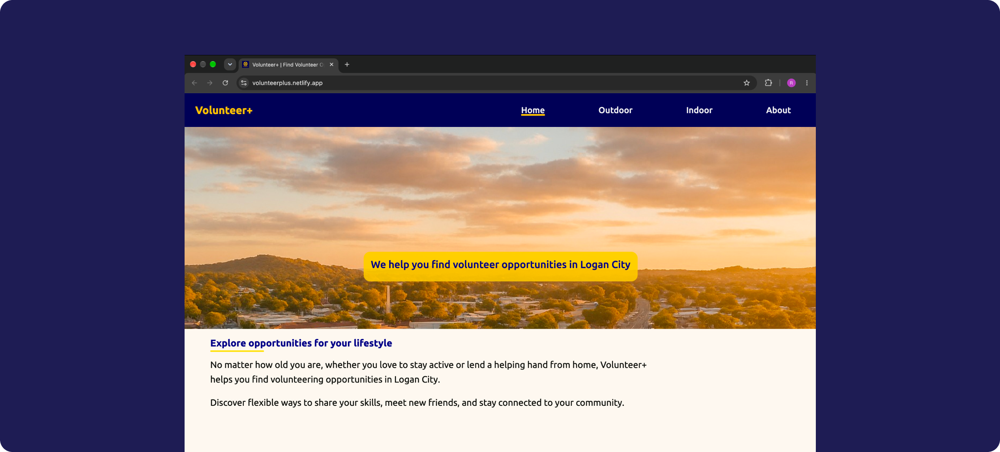

Problem
The brief was to design a high fidelity responsive website prototype, highlighting local volunteering opportunities for adults aged 65+, considering their accessibility needs and varying levels of digital confidence.
Outcome
Designed and developed Volunteer+ using HTML and CSS, applying WCAG 2.2 Level A accessibility guidelines through features such as accessible contents, colour contrast, scalable text, alt text and skip links, alongside clear navigation and responsive layouts across mobile, tablet and desktop.